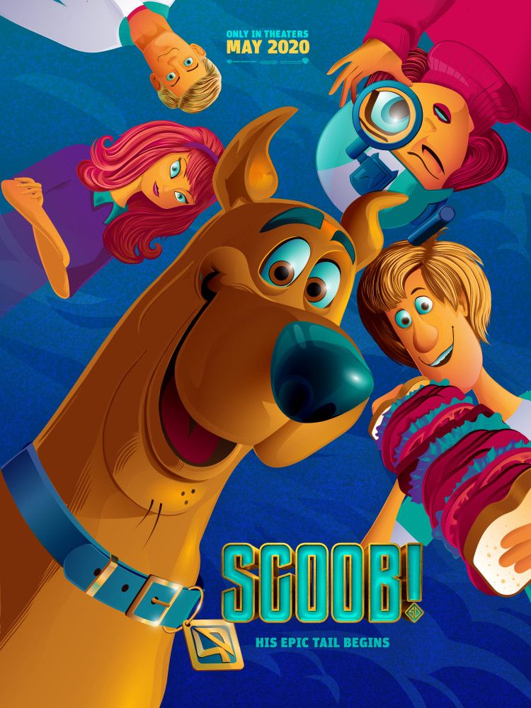
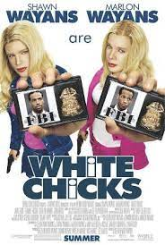
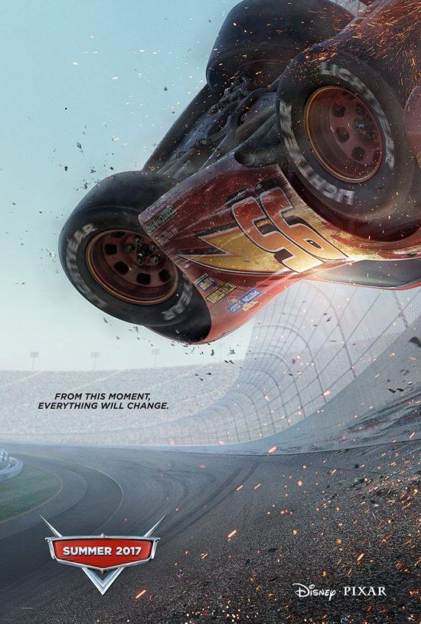

SCOOBY! O Filme
SINOPSE: SCOOBY! O Filme é uma história de origem dos famosos personagens da série animada da Hanna Barbera. Salsicha e Scooby tem uma conexão instantânea envolvendo comida em seu primeiro encontro, e logo se unem aos jovens detetives Fred, Velma e Daphne para formar a Mistério S/A. Só que, após resolver centenas de casos, eles encontram o desafio de impedir o "apocãolipse", que virá quando o fantasma do cão Cerberus for liberado no mundo.
As Branquelas
SINOPSE: Em As Branquelas, os irmãos Marcus (Marlon Wayans) e Kevin Copeland (Shawn Wayans) são detetives do FBI que estão com problemas no trabalho. A última investigação da dupla foi um grande fracasso e eles estão sob a ameaça de serem demitidos. Quando um plano para sequestrar as mimadas irmãs Brittany (Maitland Ward) e Tiffany Wilson (Anne Dudek) é descoberto, o caso é entregue aos principais rivais dos irmãos Copeland, os agentes Vincent Gomez (Eddie Velez) e Jack Harper (Lochlyn Munro). Para aumentar ainda mais a humilhação da dupla, eles são escalados para escoltar as jovens mimadas do aeroporto até o local de um evento pelo qual elas esperaram por meses. Porém no trajeto um acidente de carro provoca um verdadeiro desastre: enquanto uma das irmãs arranha o nariz, a outra corta o lábio. Desesperadas, elas se recusam a ir ao evento. É quando,para salvar o emprego, Marcus e Kevin decidem por assumir as identidades das irmãs.
Gente Grande
SINOPSE: Em Gente Grande, Lenny (Adam Sandler), Kurt (Chris Rock), Eric (Kevin James), Marcus (David Spade) e Rob (Rob Schneider) se conhecem desde pequenos. Passados trinta anos, os cinco amigos se reencontram para curtir um fim de semana juntos com as respectivas famílias, mas o feriado de 4 de Julho em uma casa no lago promete muito mais diversão do que apenas lembranças dos bons momentos. Casados e com várias crianças, os homens de família terão de confrontar o fato de não serem mais tão jovens.
Gato de Botas 2: O último pedido

SINOPSE: Em Gato de Botas 2: O Último Pedido, O Gato de Botas descobre que sua paixão pela aventura cobrou seu preço: por conta de seu gosto pelo perigo e pelo desrespeito à segurança pessoal, ele queimou oito de suas nove vidas. Com apenas uma vida restante, o Gato precisa pedir ajuda para uma antiga parceira - que atualmente é sua rival e inimiga mortal, Kitty Pata Mansa - para continuar vivo. Então, o destemido bichano parte em uma jornada épica pela Floresta Negra para encontrar a mítica Estrela dos Desejos, capaz de proporcionar o legendário Último Desejo e restaurar suas nove vidas.
Carros 3
SINOPSE: Em Gato de Botas 2: O Último Pedido, O Gato de Botas descobre que sua paixão pela aventura cobrou seu preço: por conta de seu gosto pelo perigo e pelo desrespeito à segurança pessoal, ele queimou oito de suas nove vidas. Com apenas uma vida restante, o Gato precisa pedir ajuda para uma antiga parceira - que atualmente é sua rival e inimiga mortal, Kitty Pata Mansa - para continuar vivo. Então, o destemido bichano parte em uma jornada épica pela Floresta Negra para encontrar a mítica Estrela dos Desejos, capaz de proporcionar o legendário Último Desejo e restaurar suas nove vidas.